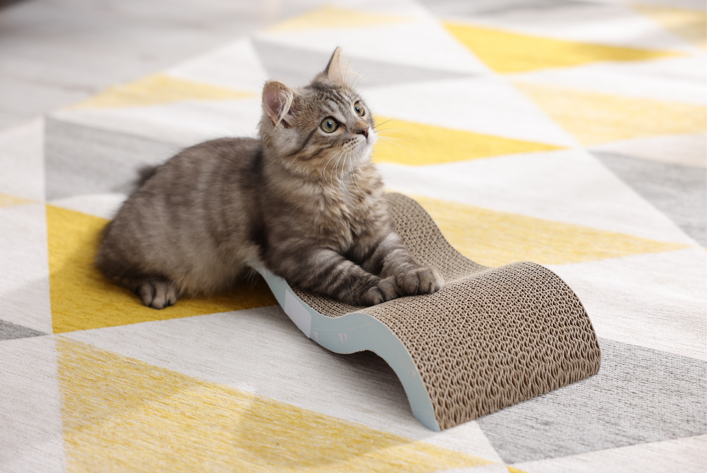
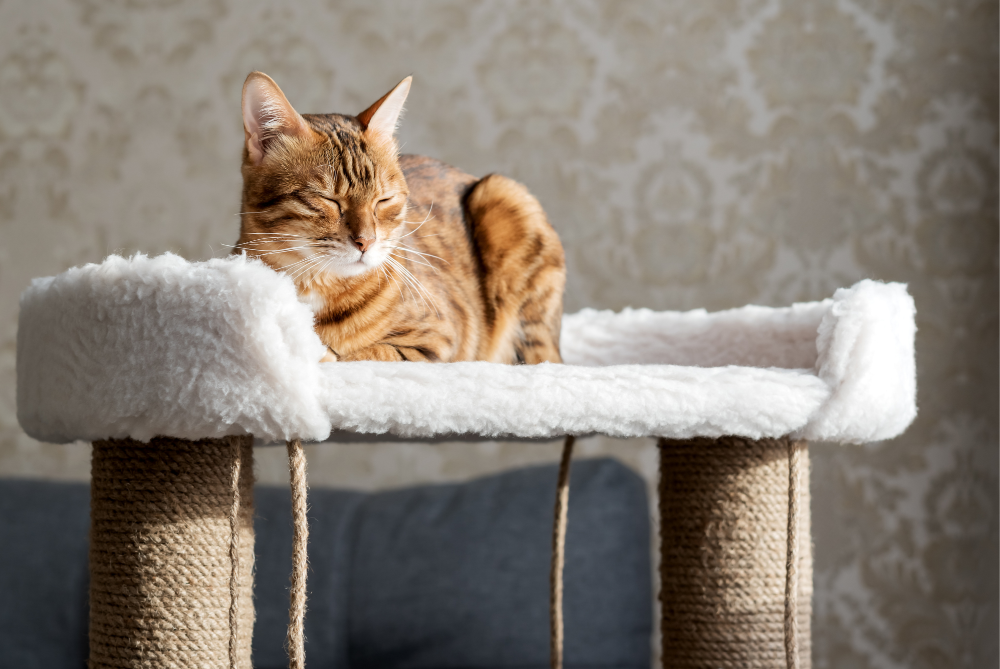
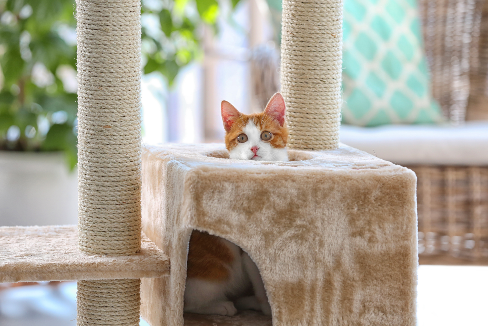
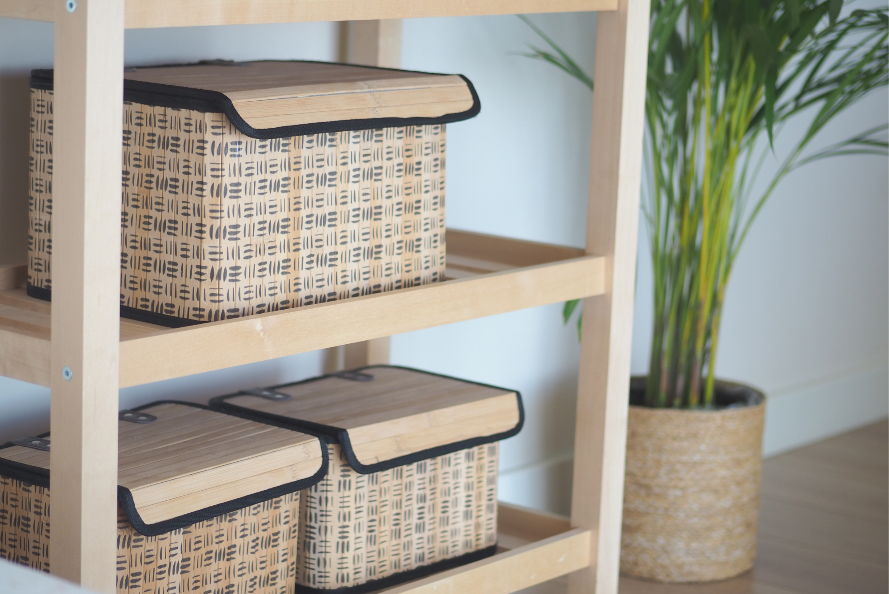
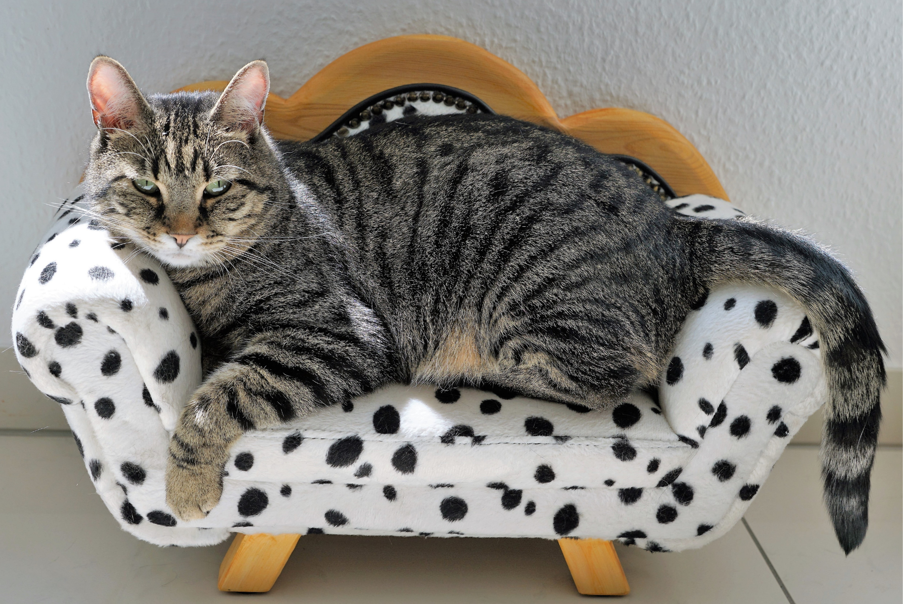
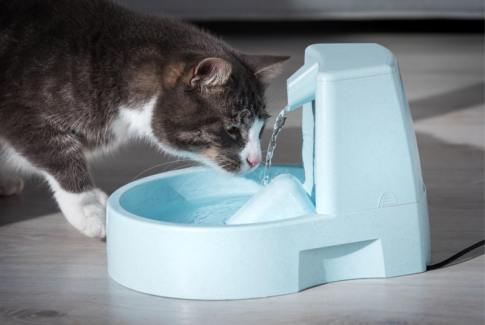

Living with a cat often means making room for more than just a food bowl and a litter box. There are scratching posts, beds, toys, climbing structures, and blankets that somehow end up taking over the living room.
But pet-friendly doesn't have to mean sacrificing your home's style.
Instead of trying to hide every sign that you have a cat, choose pieces that can work as part of the room. The right cat furniture can complement your existing colors, textures, and layout while still giving your cat the spaces they need.
Here are five cat essentials that can become part of your home decor rather than an afterthought.
1. Choose a Cat Tree That Looks Like Furniture

Cat trees can be one of the most difficult pet items to incorporate into a well-designed room. Large carpet-covered towers can quickly become the visual centerpiece — whether you want them to or not.
A more modern cat tree can solve that problem.
Look for designs with natural wood, neutral fabrics, simple shapes, and fewer visual distractions. A streamlined climbing tower can look more like a shelving unit or accent piece than traditional cat furniture.
This can also be a good opportunity to use your cat tree as part of the room's layout. Instead of automatically putting it in an empty corner, consider placing it near a window where your cat can watch the outside world.
The decor rule: Choose cat furniture using the same colors and materials already found in the room. If your living room has light wood and cream upholstery, for example, a brightly colored cat tower may feel out of place.
2. Turn a Scratching Post Into an Accent Piece

A scratching post doesn't need to be something you hide when guests come over.
Today, scratching furniture comes in everything from simple wall-mounted boards to sculptural pieces that can look surprisingly decorative.
Think of the scratcher as another piece of functional decor. A neutral sisal post can complement natural textures, while a curved cardboard scratcher can add an interesting shape to an otherwise empty corner.
And placement matters.
Cats often scratch after waking up, when they're excited, or in areas where they spend a lot of time. Placing a scratcher beside the sofa or near their favorite sleeping spot may make it more useful than hiding it across the room.
That can also help protect your furniture. Giving your cat an attractive alternative to the sofa may be more practical than constantly trying to stop them from scratching it.
3. Use a Decorative Basket to Control Toy Clutter

Cat toys are small, but they can create a surprisingly large amount of visual clutter.
One toy ends up underneath the coffee table. Another is beside the television. A feather wand is sitting on the kitchen counter. Before long, your living room can start to feel more like a playroom.
A simple decorative basket can fix much of this.
Choose a woven basket, fabric bin, or wooden storage box that complements the rest of your room. Keep it somewhere accessible so you can quickly put toys away without making the storage process another chore.
You can also use the basket to rotate toys. Keep a few favorites out and store the rest, switching them occasionally to make old toys feel new again.
The decor rule: Don't buy a pet-specific storage container if an ordinary home-storage piece does the job. A beautiful basket can hold cat toys just as well as anything labeled “pet storage.”
4. Make the Cat Bed Part of the Room

Cat beds are another item that can easily become visual clutter.
Instead of choosing a bed solely because it looks cute, consider how it will interact with the rest of the room. A low-profile cushion can sit neatly beside a sofa, while a wooden-framed bed can work with other natural materials in the space.
You can even incorporate a cat bed into furniture you already own. A cushion placed on a sturdy shelf or a designated spot on a window seat can create a comfortable resting area without introducing another large object into the room.
The key is to think about where your cat already wants to be.
If your cat consistently sleeps on the sofa, placing their bed in a distant corner probably won't change their habits. Instead, create a designated sleeping spot near the places they already enjoy.
5. Upgrade the Feeding Area

Food and water bowls are easy to overlook when decorating a home, but they're also something you see every day.
Rather than allowing bowls, food containers, and scattered kibble to become part of the visual clutter, create a dedicated feeding station.
A simple ceramic bowl set can look much more intentional than mismatched plastic bowls. A small wooden stand can also help define the area and make the feeding station feel like part of the room.
For dry food, consider storing kibble in an attractive airtight container rather than leaving a large food bag beside the bowls.
The result is a small change, but it can make the entire area feel more organized.
The decor rule: Keep the feeding area visually simple and easy to clean. Beautiful doesn't help much if the setup creates more work every day.
The Bottom Line
A cat-friendly home doesn't have to look like a pet store.
The easiest approach is to stop thinking of cat products as separate from your home decor. A scratching post can become an accent piece. A cat tree can function like furniture. A basket can control toy clutter, and a carefully chosen bed can blend into the room rather than compete with it.
The goal isn't to hide the fact that you live with a cat. It's to make the things your cat actually needs feel intentional within the space you've already created.
Because the best pet-friendly home is one that works for everyone who lives in it — including the cat.